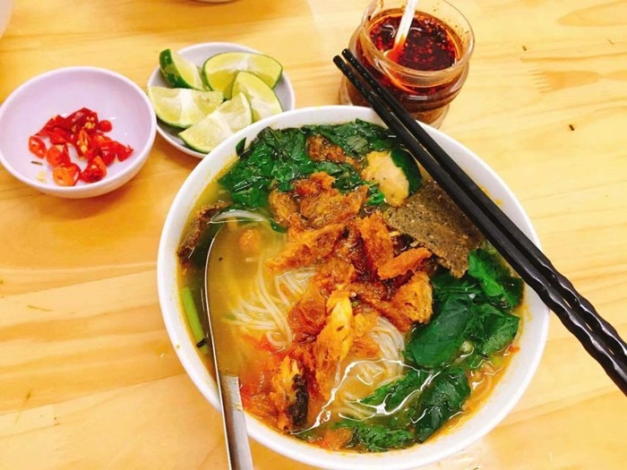
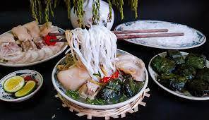
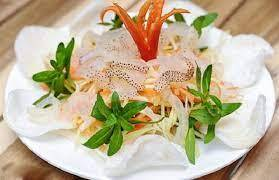

Đặc sản “không ngon không lấy tiền” ở Thái Bình
Thái Bình không chỉ được biết đến với những di tích lịch sử, văn hóa mà ẩm thực nơi đây cũng nổi tiếng không kém.
Bánh cáy làng Nguyễn

Bánh cáy có vị ngọt, bùi, chút béo đan xen cùng với độ giòn, lại vừa dẻo vừa dai. Ăn bánh cáy mà được nhâm nhi bên ấm trà xanh nóng trong tiết trời se se lạnh, vị trà ấm kết hợp với vị cay nóng của gứng trong miếng bánh sẽ khiến người ăn cảm thấy ấm dạ, khoan khoái.
Canh cá Quỳnh Côi
Canh cá ở đây chẳng cần nguyên liệu gì cao sang hay công đoạn chế biến phức tạp. Đơn giản, đậm đà, ngon là ba từ đủ để miêu ta canh cá Quỳnh Côi. Nước dùng thơm ngon, ngọt vị từ cá rô đồng hòa quyện cùng chút gừng cay nồng, chút hăng hăng của rau cải đủ để thực khách phải xuýt xoa.
Gỏi nhệch

Nhệch là một loại cá có hình dáng như lươn, sau khi sơ chế được cắt mỏng và trộn thính, đặc biệt phải chấm với chẻo. Gỏi nhệch phải ăn cùng với lá chanh, rau húng, lá sung thì mới đúng vị được. Vị bùi bùi của lá sung cùng với thịt cá ngon, béo béo da, thơm lừng thính từ gạo rang, quyện đậm đà với chẻo cay cay nồng nồng khiến gỏi nhệch ngày càng được ưa chuộng.
Bún bung
Hay còn gọi là bún dọc mùng, là món ăn yêu thích và phổ biến ở miền Bắc. Bún bung thường có dọc mùng, chân giò, mọc... Bún bung ở Thái Bình thường không ăn kèm dọc mùng mà thay vào đó là hoa chuối. Bún ngon, ngọt nước, thơm lừng vị lá xương sông sẽ làm thực khách nhớ mãi.
Bánh gai Đại Đồng

Bánh gai là thức quà khá phổ biến ở các tỉnh phía Bắc. Bánh có độ dẻo thơm của lớp bột nếp bên ngoài cùng với vị bùi béo của nhân đậu bên trong, ngọt nhưng không hề ngấy.
Nộm sứa Thái Thụy
Sứa giòn, ngon quyện với nước mắm cốt ngầy ngậy của lạc, thơm dịu của rau thơm, của dừa và một chút mực biển. Nộm sứa là món ăn mát, giải nhiệt nếu ai đã từng một lần ăn nộm sứa Thái Thụy vào mùa hè chắc chắn sẽ lưu giữ mãi hương vị thanh mát của món hải sản này.
Bánh giò Bến Hiệp

Những cái bánh giò bọc lá chuối xanh thành từng chùm 5, chùm 10 được mọi người thi nhau mua mỗi khi đi ra chợ. Bánh giò ngon khi ăn nóng, có thể ăn lót dạ hoặc ăn thay cơm đều được. Bánh mềm mịn, nhân thịt thơm ngon vừa miệng, có thể để nguyên vậy ăn hoặc ăn cùng với chút tương ớt cay cay đều rất hấp dẫn.
Bánh nghệ

Bánh nghệ thơm bùi, vàng rộm bắt mắt gắn liền với hầu hết tuổi thơ của người dân Thái Bình. Bánh làm từ gạo tẻ nhân hành hoa, mộc nhỉ và chỉ ăn ngon khi còn nóng, để nguội bánh sẽ cứng lại làm mất đi hương vị.
Ổi Bo

Để nếm được vị ổi Bo gốc có lẽ sẽ mất một chút thời gian để tìm kiếm bởi ngày nay số lượng người trồng ổi này đã giảm đi nhiều. Ổi Bo quả nhỏ, vỏ giòn đủ vị chát chua ngọt dịu, hạt ít, có mùi thơm rất quyến rũ.
Ngoài những đặc sản kể trên thì Thái Bình còn rất nhiều những món ăn tạo nên tên tuổi và thương hiệu khác như:
- Canh cá Phúc Tửu
- Ốc Quyên
- Bánh mì thịt xiên
- Bún cá bà Dần
- Kem xôi Thái Lạc
- Phượng xôi
- Gà rán TukTuk
Còn rất nhiều những món ngon khác đang chờ bạn tới khám phá và thưởng thức. Còn chần chờ gì nữa mà không xác balo lên và đi.